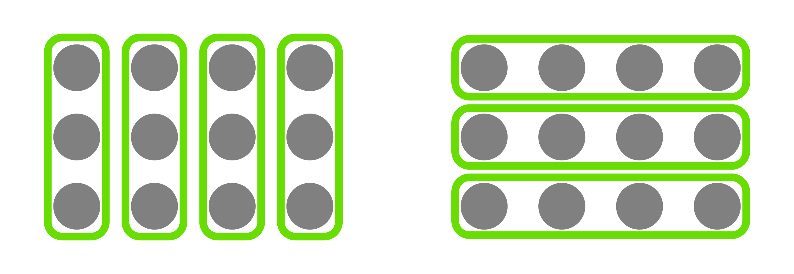
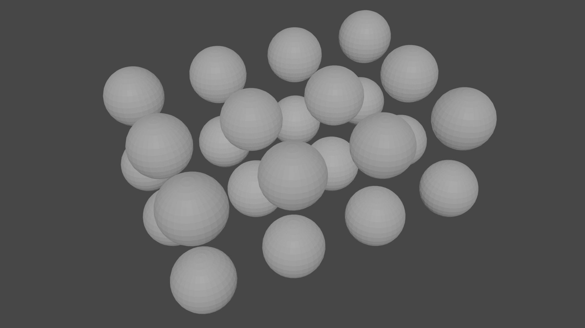
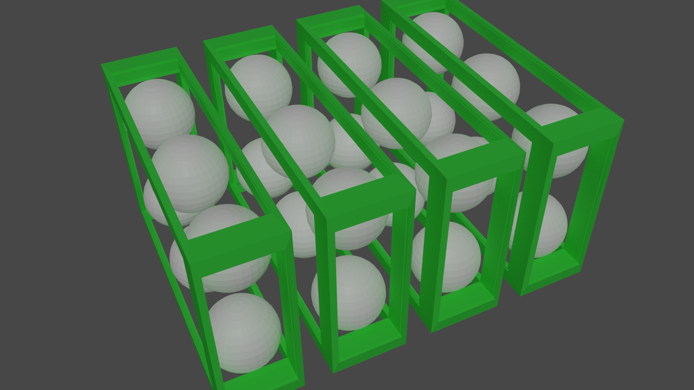
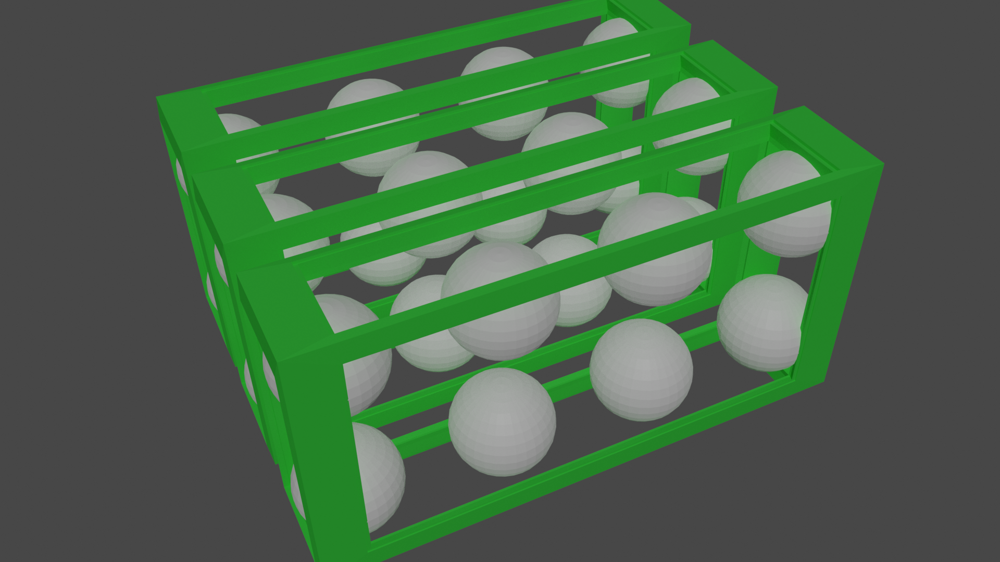
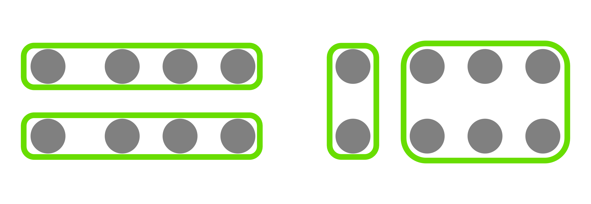

Ein Stein, zwei Steine, drei Steine. Solche Zahlen nennt man Kardinalzahlen.
Das sind aber nicht alle Zahlen. Es gibt auch noch die Ordinalzahlen, die eine Position vermitteln. Beispiele dafür sind Positionen in einem Rennen: Erster, Zweiter, Dritter, usw.
Zuguterletzt gibt es auch immer wieder die Frage, ob es Zahlen als solche in Wirklichkeit gibt.
Dazu gibt es verschiedene Positionen. Eine davon ist der sogenannte mathematische Platonismus.
Platon war ein griechischer Philosoph und hat behauptet, alle Ideen, bzw. Konzepte, existieren in einer eigenen Welt,
die außerhalb unserer Welt liegt. Eine andere Position ist der Intutionismus, der besagt, dass Zahlen eine Erfindung der Menschen seien.
Wie man sieht, gibt es hierzu also keine eindeutige Antwort (wie das bei vielen philosophischen Fragen der Fall ist).
Ob Zahlen nun Ausgedacht sind oder nicht, wir können sie benutzen. Dafür müssen wir zwar wissen, was Zahlen sind und welche es gibt, doch genau das werden wir jetzt lernen.
Die Natürlichen Zahlen
ℕ
Das Symbol ℕ steht für die "Gruppe" aller Kardinalzahlen (Zählzahlen). Hiermit kann man also Dinge zählen.
Man kann sie aber auch als Ordinalzahlen interpretieren. Für Menschen ist dieses Umdenken ganz natürlich: Aus 1 wird Platz 1 (der erste), aus 2 wird Platz 2, usw.
Auch wenn diese Verbindung für uns so einfach ist, gibt es mathematisch einen Unterschied (Meistens wird ℕ nämlich als "Gruppe" der Ordinalzahlen behandelt!)
Doch was ist eigentlich diese "Gruppe", die von mir so mysteriös in Anführungszeichen gesetzt wird?
Es handelt sich um eine Menge. Eine Menge ist einfach eine Ansammlung von Objekten. Man kann sie sich vorstellen, wie einen (riesigen) Korb. Er beinhaltet manche Dinge und manche auch nicht (die liegen dann daneben oder so).
Wichtig ist, dass es dabei keine feste Reihenfolge gibt. Man kann den Korb schütteln und alles durcheinanderwerfen, aber es ändert sich nicht, was im Korb ist und was nicht (natürlich nur, solange man nicht zu heftig schüttelt).
Aber wofür braucht man denn diese Mengen?
Mathematiker sind Ordnungsfreaks. In der Mathematik ist alles schön sauber und aufgeräumt.
Da ist es doch nur logisch, alles und jeden in Gruppen zu stecken, zu organisieren und zu ordnen.
Tatsächlich kann praktisch alles in der Mathematik durch Mengen dargestellt werden... Wir kommen vom Thema ab.
Zurück zu den Zahlen. Wir haben uns um eine wichtige Zahl noch nicht gekümmert: die Null.
Als Ordinalzahl ist eine Null völlig sinnfrei. Wie kann es einen Platz vor dem ersten Platz geben?
Daher nimmt man sich die Kardinalzahlen zu Hilfe. Ich werde es in Form einer klassischen Schulaufgabe formulieren.
Karl fragt Peter: "Wie viele Kekse hast du noch übrig?" aber Peter hat schon alle gegessen. Was soll Peter antworten?
Die Antwort ist: Null. Wer hätte das gedacht. Die Null steht für "nichts", also für eine nicht-Vorhandenheit des zu zählenden Objektes.
Doch ist die Null nicht nur das. In unserem Zahlensystem (mehr dazu in einem späteren Post) hängt die Null auch eng mit der Zehn zusammen.
Erst die Null am Ende von "10" macht die Eins zur Zehn.
Zählen und die größte Zahl
Jedes Kind lernt in der Grundschule, wie man zählt. Eins, Zwei, Drei, usw.
Beim Zählen geht man im Prinzip von jeder Zahl zu ihrer Nachfolgerzahl.
Wenn man sich die Zahlen als Kardinalzahlen vorstellt, kann man sich die Nachfolgerzahl als "einen mehr" denken.
Mit Ordinalzahlen erklärt ist es jeweils der nächste Platz.
Jetzt können wir also zählen. Eins, Zwei, Drei, Vier, man könnte ewig so weiter machen.
Moment mal, ewig? also für immer? Erreicht man nicht irgendwann die größte Zahl?
NEIN!
Eine "größte Zahl" hätte logischerweise keinen Nachfolger mehr.
Und warum sollte eine Zahl keinen Nachfolger haben? Man kann doch immer noch ein Objekt dazu legen, egal wie viele man hat.
Gäbe es eine größte Zahl, dann wäre es ja irgendwann physisch unmöglich, noch ein Objekt dazuzulegen.
Weil das offensichtlich nicht der Fall ist, gibt es auch keine größte Zahl.
Addition
Die Addition / Das Addieren (ugs. Plus-Rechnen) kann man sich als Zusammenlegen von Grüppchen vorstellen.
Links drei Steine, rechts vier Steine. Schiebt man sie zusammen, liegen dort sieben Steine.
Man kann Addition aber auch als wiederholtes Nachfolger-nehmen interpretieren: Wie viel ist drei plus vier? Drei mal die Nachfolgerzahl von vier natürlich.
Wenn wir "Die Nachfolgerzahl von" als "N" schreiben, ist es also:
NNN4 = NN5 = N6 = 7
Das ist sehr explizit aber es stellt dar, wie Mathematiker die Addition definieren.
Nebenbei: "=" ist das Gleichzeichen. Was links und rechts von ihm steht muss immer den gleichen Wert haben.
Man schreibt für die Addition zweier Zahlen diese Zahlen nebeneinander, mit einem "+" dazwischen.
Die Addition mit Null ist auch interessant.
Wenn wir null mal die Nachfolgerzahl nehmen, müsste ja eigentlich nichts passieren, oder?
So ist es. Intuitiv: Legen wir null, also keine, Steine zu drei Steinen dazu, bleiben es drei Steine.
Addition mit Null verändert also eine Zahl nicht.
Man nennt die Null wegen dieser Eigenschaft das neutrale Element der Addition.
Hierbei gibt es zwei wichtige Begriffe:
Ein Summand ist ein Teilnehmer an einer Addition. In "3 + 4" sind also "3" und "4" die Summanden.
Eine Summe bezeichnet sowohl den Wert einer Addition als auch die Addition selbst. "Die Summe von 3 und 4" steht als sowohl für "7" als auch für "3 + 4" selbst.
Nun werden wir zwei wichtige Eigenschaften der Addition betrachten.
Erstens: Die Addition ist Kommutativ. (dies wird auch oft als Kommutativgesetz bezeichnet)
Das bedeutet, dass die Reihenfolge der Summanden egal ist, also dass z.B. "3 + 4" das Gleiche ist wie "4 + 3".
Intuitiv ist uns dies leicht klar. Ob wir zu drei Steinen vier oder zu vier Steinen drei dazulegen, am Ende sind es sieben.
Für die zweite Eigenschaft müssen wir erst die Klammern einführen.
Klammern sind dazu da, eine Reihenfolge festzulegen.
Wenn man "3 + 2 + 1" schreibt, ist erst mal nicht klar, was man zuerst machen soll: "3 + 2" oder "2 + 1"?
Darum schreibt man im ersten Fall "(3 + 2) + 1" und im zweiten Fall "3 + (2 + 1)".
Was in den Klammern steht, wird zuerst ausgerechnet.
Man kann auch in Klammern noch mehr Klammern schreiben. Dann kümmert man sich zuerst um die innersten Klammern, also "1 + ((2 + 3) + 2)" → "1 + (5 + 2)" → "1 + 7" → "8".
Nun zur zweiten Eigenschaft der Addition: Sie ist Assoziativ (dies wird auch oft als Assoziativgesetz bezeichnet)
Das bedeutet, dass Klammern keine Rolle spielen. Genauer bedeutet es, dass "(1 + 2) + 3 = 1 + (2 + 3)".
Dies gilt für alle Zahlen, nicht nur 1, 2 und 3. Darum kann man dann doch "1 + 2 + 3" schreiben, da beide Möglichkeiten, Klammern zu setzen, ja aufs Gleiche hinauslaufen.
Intuitiv ist uns auch die Assoziativität leicht klar. Ob wir erst einen und dann drei oder erst drei und dann einen Stein dazulegen, am Ende haben wir vier dazugelegt.
Multiplikation
Die Multiplikation / Das Multiplizieren (ugs. Mal-Nehmen) ist nicht ganz so intuitiv, wie die Addition.
Doch auch hier gibt es eine bildliche Vorstellung:
Es geht wieder um Gruppen, doch anstatt zwei Gruppen verschiedener Größen zusammenzulegen, legt man mehrere Gruppen der gleichen Größe zusammen.
Drei mal Vier bedeutet also, drei Vierergruppen zusammenzulegen. Man erhält dann zwölf Objekte.
Man kann Multiplikation auch als wiederholtes Addieren interpretieren. Hier ein Beispiel:
Was ist 3 mal 4? Es ist 4 + 4 + 4 (Drei Vieren), also 12.
Man schreibt für das multiplizieren zweier Zahlen diese Zahlen nebeneinander, mit einem Mal-Zeichen dazwischen.
Es gibt mehrere Mal-Zeichen. In der Grundschule lernte Ich "⨯", später dann "•" und an Computern wird auch "*" geschrieben. Ich werde "•" verwenden.
Nun wollen wir wieder über die Null reden. Multiplikation mit Null kann man sich nicht ganz so einfach vorstellen, aber es ist wie folgt: Man legt Null, also gar keine, Gruppen zusammen. Man hat dann immer noch nichts. Also ist Null mal irgendwas immer Null.
Dieser Fakt ist, vor allem in höherer Mathematik, enorm wichtig, also lohnt es sich, ihn sich extra stark einzuprägen.
Jetzt werden wir uns einen neuen Gast, die Eins, angucken. Multiplikation mit Eins verläuft ähnlich wie mit Null.
Man hat eine Gruppe, also erhält man schlicht die Zahl, mit der Eins multipliziert wird.
Die Eins ist also das neutrale Element der Multiplikation.
Auch hier gibt es zwei wichtige Begriffe:
Ein Faktor ist ein Teilnehmer einer Multiplikation, also das was ein Summand für die Addition war. In "3 • 4" sind "3" und "4" Faktoren.
Ein Produkt ist bei der Multiplikation wie eine Summe bei der Addition. "Das Produkt von 3 und 4" steht also sowohl für "12" als auch für "3 • 4" selbst.
Auch die Multiplikation ist Kommutativ.
Man kann sich dies (siehe Grafik) als ein Rechteck vorstellen, bei dem man sowohl die Reihen als auch die Spalten betrachten kann.

Grafik - Kommutativgesetz: 4 • 3 = 3 • 4
Außerdem ist die Multiplikation auch Assoziativ.
Dies lässt sich ähnlich in 3D darstellen, indem man einen Quader unterteilt (siehe Grafik)


Grafik - Assoziativgesetz: (3 • 2) • 4 = 3 • (2 • 4) = 3 • 2 • 4
Die Multiplikation hat auch noch eine dritte Eigenschaft.
Sie ist Distributiv über Addition.
Das bedeutet, dass man einen Ausdruck mit Klammern wie folgt umformen kann.
2 • (1 + 3) = (2 • 1) + (2 • 3)
Wegen der Kommutativität gilt ja "2 • (1 + 3) = (1 + 3) • 2", daher funktioniert das natürlich auch von rechts.
Ich habe es trotzdem noch einmal extra aufgeschrieben:
(1 + 3) • 2 = (1 • 2) + (3 • 2)
Auch diese Eigenschaft liegt nicht an den Zahlen 1, 2 und 3. Auch dies geht mit allen Zahlen.
Diese Regel wird anhand der folgenden Grafik illustriert

Primzahlen und Zerlegung
Zahlen wie 4 können als Produkt geschrieben werden, ohne dabei die 1 oder die Zahl selbst zu verwenden: "4 = 2 • 2".
Es gibt aber auch Zahlen, die das nicht können. Diese nennt man Primzahlen, mit einer Ausnahme: Die 1 zählt nicht als Primzahl.
Viele Zahlen können auch als mehrere, verschiedene Produkte geschrieben werden. Wenn man alle auftauchenden Faktoren dieser Produkte für eine Zahl auflistet, dann trägt diese Liste, oder eher alle Zahlen in ihr, einen besonderen Namen: Es handelt sich um die Faktoren der ursprünglichen Zahl.
Dass Mathematiker dasselbe Wort für verschiedene Dinge verwenden, geschieht immer mal wieder. Aber in den meisten Fällen ist das nicht schlimm, da die verschiedenen Bedeutungen sehr eng beieinander liegen oder aber da es immer klar ist, wovon gerade die Rede ist.
Eine wichtige Eigenschaft von Faktoren, die wir schon bei der 4 gesehen haben, ist, dass jeder eine Häufigkeit hat. Die Zwei ist zwei mal ein Faktor der Vier. In manchen Fällen ist man nur dafür interessiert, welche Zahlen Faktoren sind, aber auch wie oft diese Faktoren sind kann manchmal eine Rolle spielen.
Bemerke: Die Eins ist ein Faktor jeder Zahl (und das unendlich oft).
Faktoren einer Zahl, die selbst Primzahl sind, nennt man Primzahlfaktoren oder Primfaktoren.
Jede Zahl kann auf nur eine Weise als Produkt aller ihrer Primfaktoren geschrieben werden.
Dieser Fakt ist, warum wir die Eins nicht als Primzahl bezeichnen. Man könnte dann nämlich so oft man will ein "1 •" vorne anhängen Dann gäbe es also mehr als eine Weise, ein solches Produkt zu schreiben.
Dieses Produkt wird als Primfaktorzerlegung der Zahl bezeichnet
Ein Beispiel haben wir oben schon gesehen. Die Zwei ist nämlich eine Primzahl und "4 = 2 • 2" ist die Primfaktorzerlegung der Vier.
Schlusswort
Puh, das war ein ganz schöner Brocken. Aber jetzt sind wir durch.
Ich hoffe, meine Erklärungen waren verständlich und möchte jedem Leser von ganzem Herzen fürs Lesen danken.
Auf Wiedersehen und bis zum nächsten Mal, wo wir uns mit Anteilen und Brüchen befassen werden.